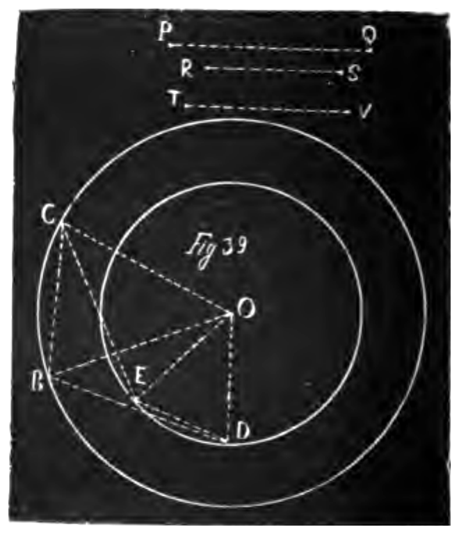

§§ 93–95: Concentric Fourth Proportional¶
§ 93. Problem (Fig. 39, folio 0073, p. 48). Given three distances \(a, b, c\), find the fourth proportional \(x = bc / a\) (\(a : b :: c : x\)) by the compass alone.
Construction: Around a common center A, draw two concentric circles AB of radius \(a\) and AD of radius \(b\). In circle AB, lay off chord BC \(= c\). Choose an arbitrary compass opening \(r\) (large enough to bridge the two circles) and sweep equal arcs BD and CE from B and C cutting the outer circle at D and E (with ).
Proof: Triangles \(\triangle ABD\) and \(\triangle ACE\) have all three sides equal (\(AB = AC = a\), \(AD = AE = b\), \(BD = CE = r\)), so \(\angle BAD = \angle CAE\), hence \(\angle BAC = \angle DAE\). The isosceles triangles \(\triangle ABC\) and \(\triangle ADE\) are therefore similar, yielding \(AB : AD :: BC : DE\), i.e., DE \(= \frac{bc}{a}\) in just 4 circles (\(S = 14\))!
§§ 94–95. Handles the case \(c > 2a\) by subdividing \(c\) or scaling \(a, b\) proportionally. Gaetano Fazzari (1901, p. XI) highlighted § 93 as a premier example where Mascheroni's concentric fourth proportional defeats Euclid VI.12 under Émile Lemoine’s Geometrography.

